Commit to equity, quality in education
With the national election just 18 days away, political parties are finalising their manifestos. The Daily Star spoke to experts to identify the pressing issues that should top the agenda for parties.
Search the full archive by keyword, format, beat, year and byline status.
With the national election just 18 days away, political parties are finalising their manifestos. The Daily Star spoke to experts to identify the pressing issues that should top the agenda for parties.
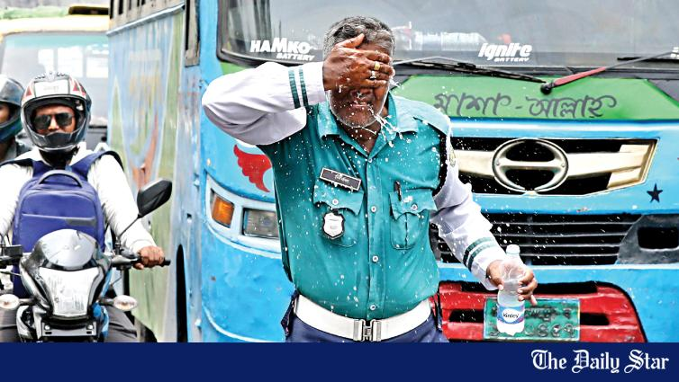
It was around 2:30pm on Tuesday.
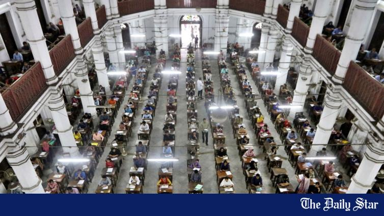
From the next academic year, all public universities have to enrol students through a single admission test and the government will set up a separate authority to hold that exam.
Deputy commissioners yesterday warned that the growing availability of drugs among youth, despite regular enforcement drives, poses a grave threat to the nation, urging the government to adopt tougher measures to curb the menace.

Several public universities have lately been shaken by incidents in which teachers were harassed, confined to their offices, or even assaulted by student leaders over alleged links to the previous regime, with the authorities failing to prevent the recurrence of such untoward events.
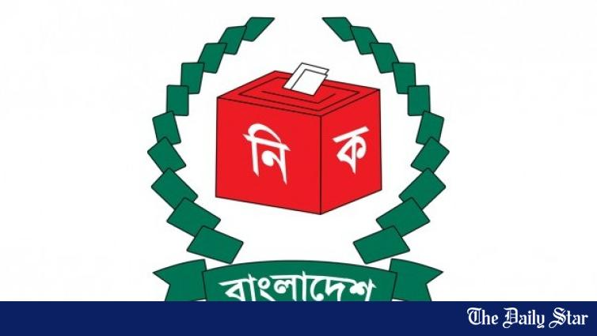
A day after the Election Commission primarily cleared little-known Bangladesh Nationalist Movement (BNM) and Bangladesh Supreme Party (BSP) for registration as political parties,
All government primary schools have been asked to keep three books -- two on late president Ziaur Rahman, former prime minister Khaleda Zia, and one written by Prime Minister Tarique Rahman.
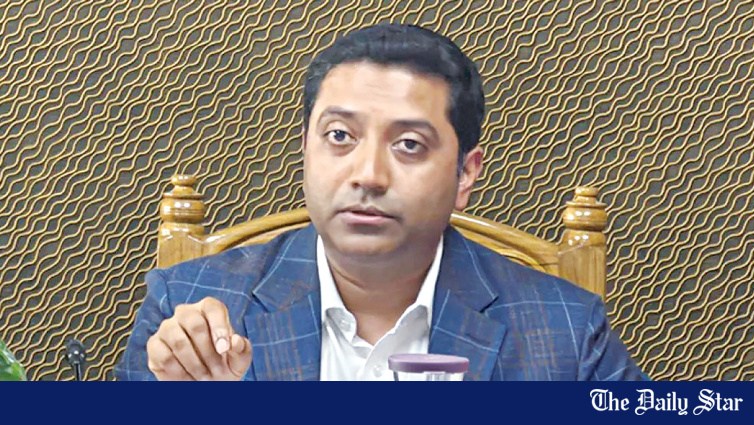
The government plans to introduce minimum learning standards for students from class one to class five across government primary, private, and English-medium schools, while allowing each stream to retain its distinct identity.
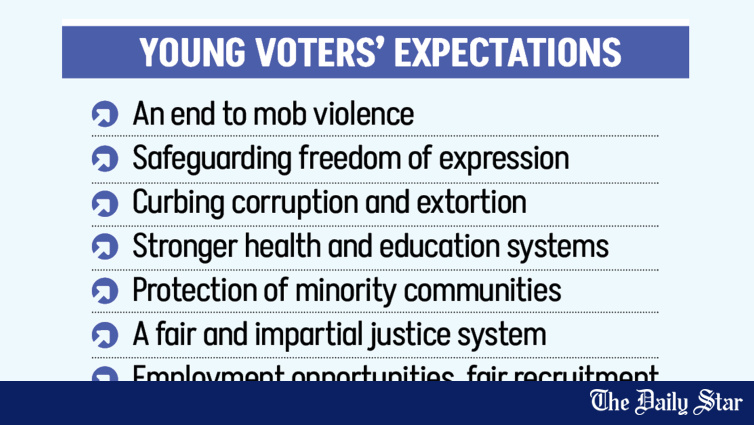
Young voters want citizens’ safety and security at core of their election manifestos, with special focus on safeguarding freedom of expression and protecting rights of minority communities
The new budget has proposed a sharp increase in education spending for the next fiscal year, but experts said a larger allocation would mean little unless the money is spent efficiently and translated into better learning outcomes.
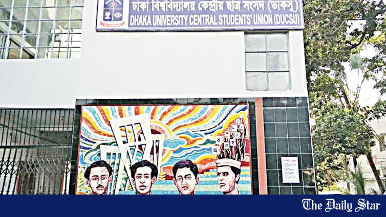
Elected with a mandate to protect students’ rights, student union leaders at five major public universities have instead repeatedly been embroiled in controversies over student assaults, teacher intimidation, administrative interference, and divisive initiatives.
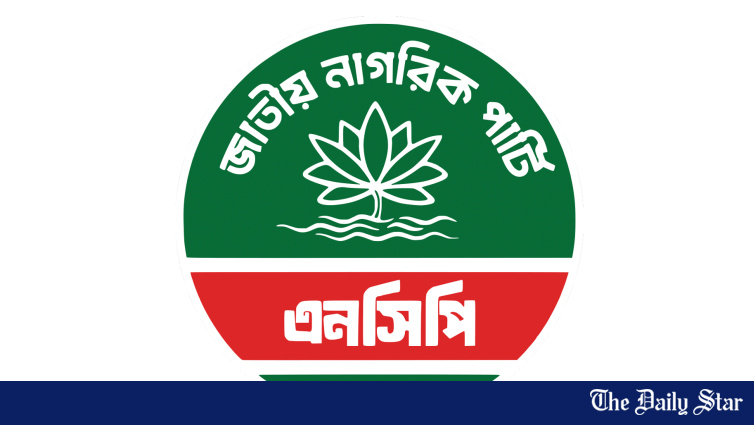
Amid doubts over its political future and alliance choices, the youth-led National Citizen Party (NCP) has made an eye-catching debut, winning six seats in its first parliamentary election.
The government is set to place education and health at the centre of its spending plan for the next fiscal year, with the combined allocation for the two sectors likely to rise by nearly 63 percent from this fiscal year’s revised budget.
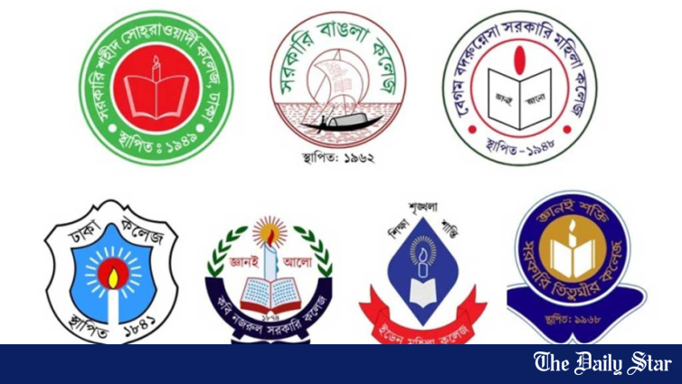
The government has finalised the draft ordinance to establish Dhaka Central University, which will primarily function as an affiliating and regulatory body for seven affiliated colleges.
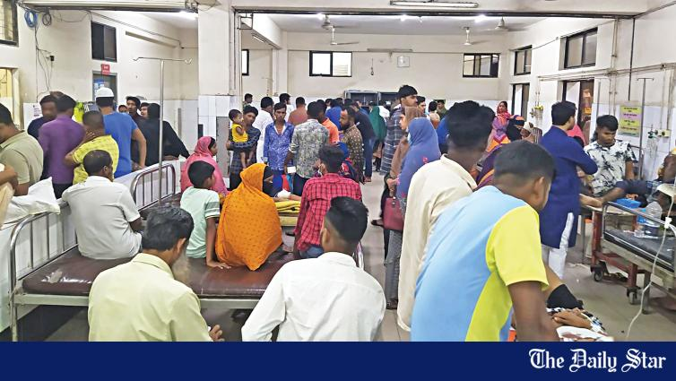
Sixty-five-year-old Mohammad Siraj had to seek medical attention for severe abdominal pain and other physical illnesses on Sunday at Shaheed Suhrawardy Medical College.
All government primary schools have been asked to keep three books -- two on late president Ziaur Rahman, former prime minister Khaleda Zia, and one written by Prime Minister Tarique Rahman.
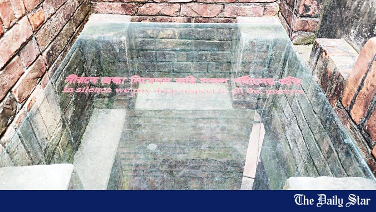
It was just a regular water-pump house, but in 1971, the Pakistan army transformed into an embodiment of horror -- a mass killing field, where the officers killed and dumped countless bodies.
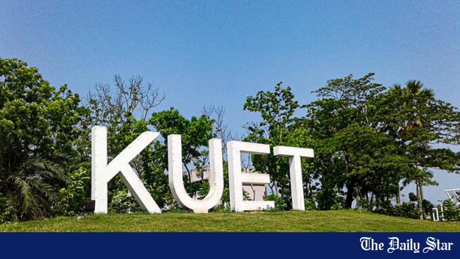
Former vice-chancellor Prof Mohammad Masud misused funds from a German-backed research project, made irregular appointments and withdrew salary after his removal from office at Khulna University of Engineering and Technology (Kuet), according to a government-formed investigation report.
The “Yes” vote in Thursday’s referendum received comparatively lower support than in the previous three plebiscites.
The University Grants Commission (UGC) is preparing a research repository to track how university research funds were spent and what they produced over the past 15 years.
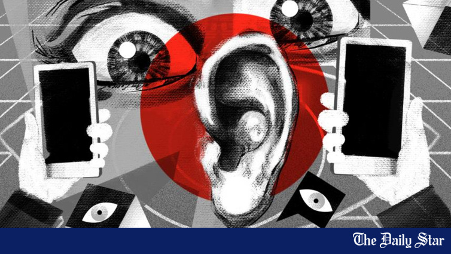
Journalism is meant to hold power to account, and mobile journalism, using smartphones for reporting and storytelling, should have ideally taken that mission to new heights.
There are no libraries at nine out of 10 primary schools in Nilphamari and seven out of ten schools in Thakurgaon, according to the latest Centre for Policy Dialogue studies.
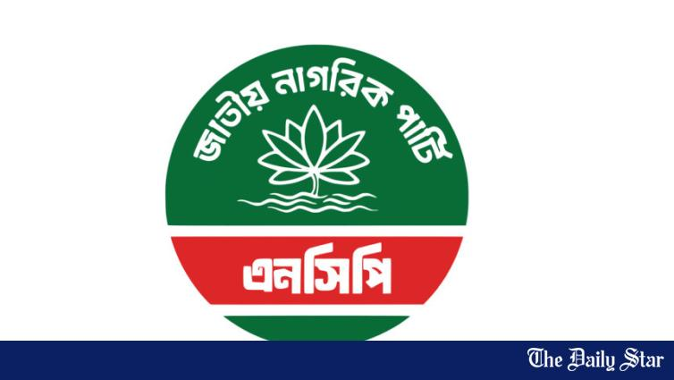
The Jamaat-led alliance has so far left 29 parliamentary seats for the National Citizen Party, but aspirants from other allies remain in the race in at least 21 of those constituencies, NCP sources said.
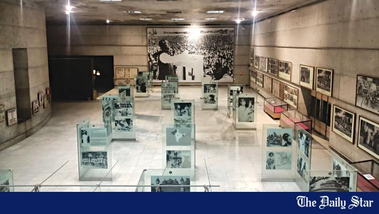
The word “Swadhinata” evokes a powerful image of Bangladesh’s journey to independence, and the Swadhinata Museum, located at Dhaka’s Suhrawardy Udyan is a testament to that journey, embodying the spirit of freedom.